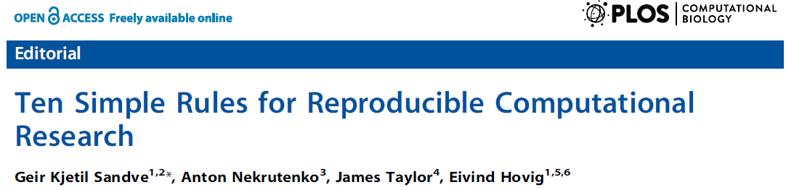
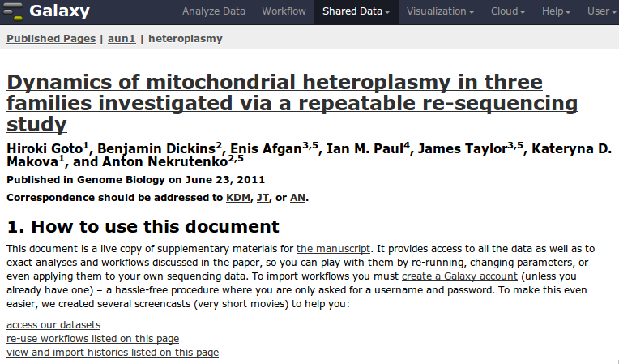
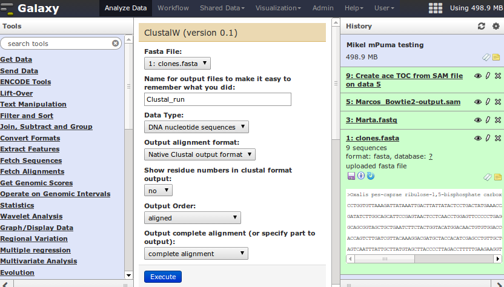

Galaxy tutorial
Erasmus Mundus MSc Marine Environment and Resources 2014
Genomics of Marine Resources
Mikel Egaña Aranguren
http://mikeleganaaranguren.com / mikel.egana.aranguren@gmail.com
Functional Genomics Group (http://www.genomic-resources.eu/)
University of Basque Country (UPV-EHU)
Galaxy tutorial
GitHub repo (slides and papers): http://github.com/mikel-egana-aranguren/Galaxy_MSc_Marine_Environment
GitHub page (to view this slides): http://mikel-egana-aranguren.github.io/Galaxy_MSc_Marine_Environment/galaxy.html

What is Galaxy?
What is Galaxy for?
A web server that offers the usual bioinformatics tools in a central space with ...
... data storage
... history
... workflows
Why is Galaxy so good?
Very complex computational analyses
... easily
... with provenance
Reproducible science!
On reproducible science

On reproducible science
Rule 1: For Every Result, Keep Track of How It Was Produced
Rule 5: Record All Intermediate Results, When Possible in Standardized Formats
Rule 9: Connect Textual Statements to Underlying Results
Rule 10: Provide Public Access to Scripts, Runs, and Results
Reproducible science: Galaxy for executable papers

More information
Galaxy main server (Limitations on data size, computational resources): http://usegalaxy.org/
Galaxy documentation: http://wiki.galaxyproject.org
Using Galaxy
Main interface

Hands-on exercise
Jennifer Hillman-Jackson and Galaxy Team. Using galaxy to perform Large-Scale interactive data analyses. Current protocols in bioinformatics
Basic Protocol 1: finding human coding exons with highest SNP density
http://usegalaxy.org/u/galaxyproject/p/using-galaxy-2012
Hands-on exercise Step 12
12. Import coordinates ...
- group:
Variation and RepeatsVariation - track:
Common SNPs(132)Common SNPs (138)
Sharing your stuff
You can make workflows and histories public with a URL, share with other users, and import/export them
You can also create a Galaxy page
Local installation
Usually a good idea to install Galaxy locally, even just for yourself:
... provenance when you sit down and write the paper
... sensitive data
... install/develop other Galaxy tools
Local installation requirements
Some UNIX flavour (GNU/Linux, MAC OS X*)
Python
Mercurial (hg)
Install with Mercurial
hg clone https://bitbucket.org/galaxy/galaxy-dist/
cd galaxy-dist
hg update stable
Use
Run:
./run.shnohup ./run.sh &
Open http://127.0.0.1:8080/ and do your thing
Stop (history, workflows etc. will be stored but execution will interrupt):
- Close terminal or
CTRL-C kill -9 PID
Update
hg incoming
hg pull -u
Installing tools
Add yourself as admin (add admin_users = your_email to universe_wsgi.ini)
Restart, log in and install through admin; tool sheds
or install manually* (Very basic XML and UNIX skills needed)